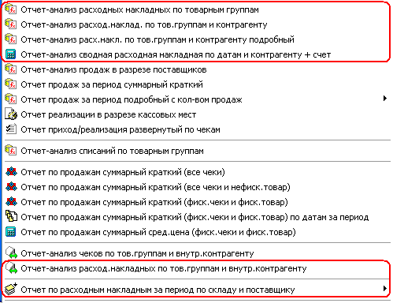
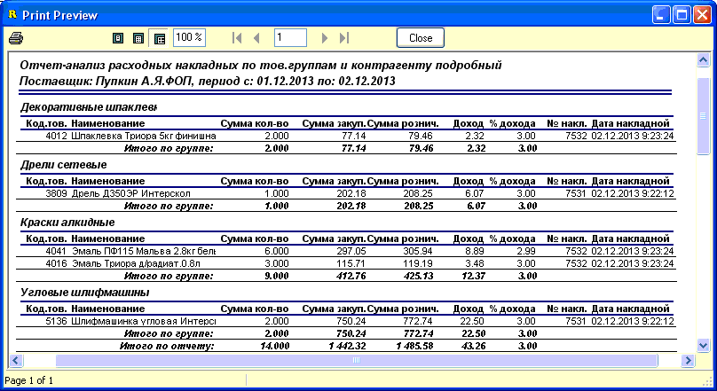
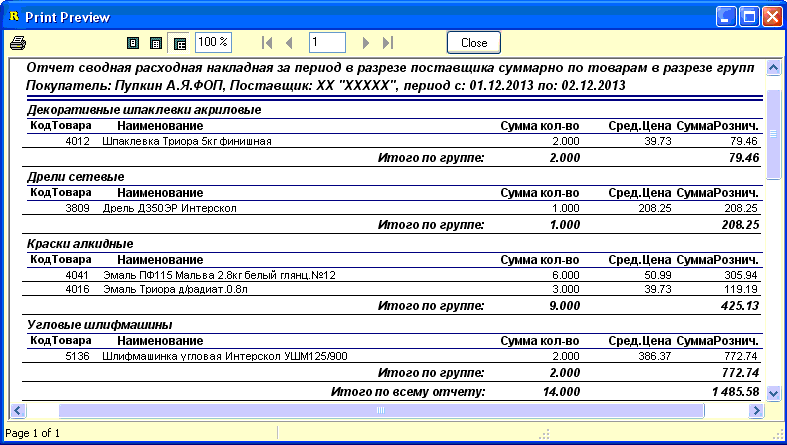
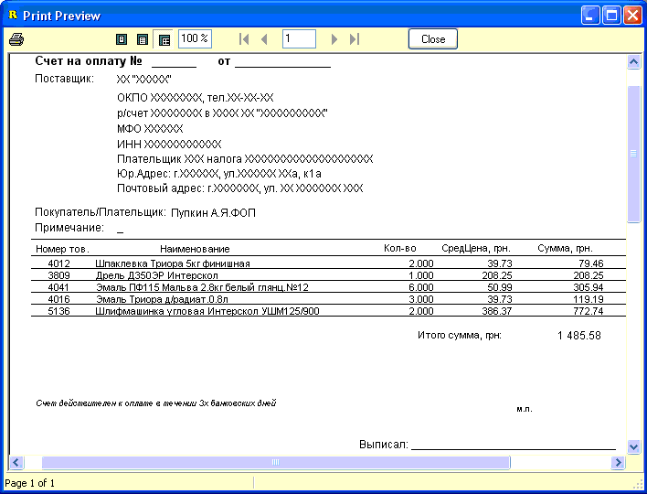
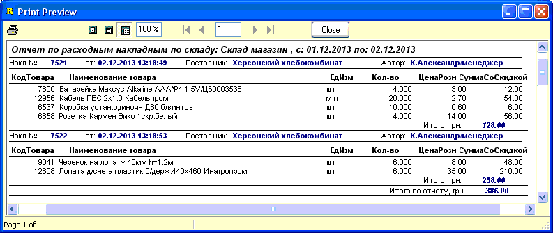

- Поскольку, кроме чеков, еще одним документом
отпуска товара является расходная накладная, то есть и отчеты позволяющие
вывести реализацию осуществленную с их помощью. В главном меню, на
рисунке внизу, они выделены красными прямоугольниками. Все они используют для
выборки значения календариков "С даты/По дату", а некоторые из них и
другие параметры, выбираемые на форме отчета, о чем будет указано в
описании ниже.
- 
- 1. Отчет-анализ расходных накладных по
товарным группам. Пример на рисунке внизу.

- 2. Отчет-анализ расходных накладных по
тованым группам и контрагенту. Полностью аналогичен предыдущему
отчету, только использует кроме дат, еще и выбранного контрагента,
реализация которому и будет отбираться.
- 3. Отчет-анализ расходных накладных по
тованым группам и контрагенту подробный. Опции отбора аналогичны
предыдущему отчету, однако выводятся не только суммы по товарным группам, но и
детализация - товары построчно из расходных накладных на выбранного
контрагента. Пример внизу на рисунке.
- 
- 4. Отчет-анализ сводная расходная
накладная по датам и контрагенту + счет. Используются даты и
контрагент. На печать первым документом выводится, аналогичная по своему виду
предыдущему отчету, расходная накладная, а вторым документом выводится счет на
оплату, включающий в себя все позиции данной "сводной" накладной. Данный метод
иногда используется в работе с государственными предприятиями, которые
оплачивают, уже отгруженный по нескольким накладным товар, через
госказначейство. Внизу показан пример вывода этих документов (напоминаем, что
реквизиты в счет подставляются из настроек программы, вкладка"Счета - Товарные
чеки").
- 
- 
- 5. Отчет-анализ расходных накладных по
товарным группам и внутреннему контрагенту. Печатная форма
предварительного просмотра аналогично отчетам №1 и №2, рисунки которых
показаны выше. Однако отобранный на форме контрагент означает не
котрагента-получателя расходной накладной, а означает внутреннего контрагента
(внутреннюю фирму), на которого был оприходован отгружаемый товар.
Если магазин ведет учет по нескольким внутренним контрагентам, то данный отчет
может оказаться весьма полезным.
- 6. Отчет по расходным накладным за период по
складу и поставщику. Используются даты, склад, контрагент указанные на форме.
Пример показан внизу, на рисунке.
- 